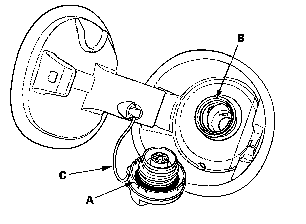
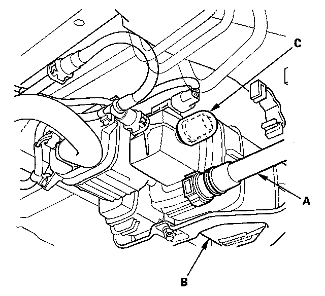
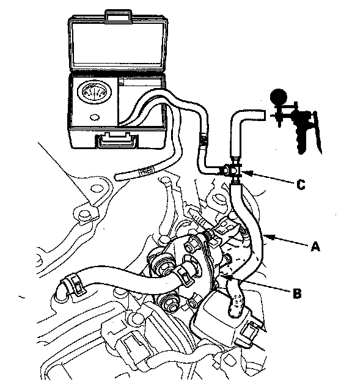
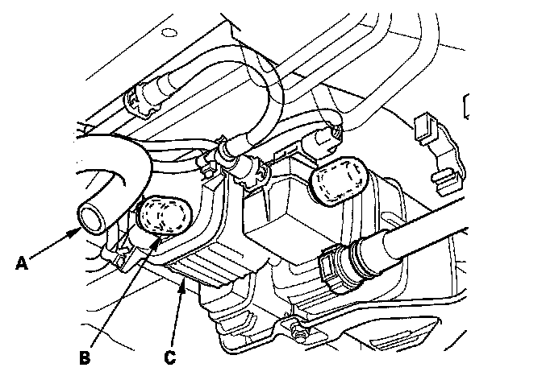

P0456
DTC P0455: EVAP System Very Large Leak DetectedDTC P0456: EVAP System Very Small Leak Detected
NOTE: The fuel system is designed to allow specified maximum vacuum and pressure conditions. Do not deviate from the vacuum and pressure tests as indicated in these procedures. Excessive pressure/vacuum would damage the EVAP components or cause eventual fuel tank failure.
Special Tools Required
- Vacuum pump/gauge, 0 - 30 in.Hg, Snap-on YA4000A or equivalent, commercially available
- Vacuum/pressure gauge, 0 - 4 in.Hg, 07JAZ-001000B
NOTE:
- Before you troubleshoot, record all freeze data and any on-board snapshot, and review the general troubleshooting information.
- Fresh fuel has a higher volatility that will create greater pressure/vacuum. The optimum condition for testing is less than a full tank of fresh fuel. If possible, to assist in leak detection, add 1 gallon of fresh fuel to the tank (as long as it will not fill the tank), just before starting these procedures.
1. Check the fuel fill cap (the cap must say "TIGHTEN TO CLICK"). It should turn 1/4 turn after it's tight, then it clicks.
Is the correct fuel fill cap installed and properly tightened?
YES - Go to step 2.
NO - Replace or tighten the cap, then go to step 22.

2. Check the fuel fill cap seal (A) and the fuel fill pipe mating surface (B). Verify that the fuel fill cap tether cord (C) is not caught under the cap.
Is the fuel fill cap seal missing or damaged, is the fuel fill pipe damaged, or is the tether cord caught under the cap?
YES - Replace the fuel fill cap or the fuel fill pipe, then go to step 22.
NO - Go to step 3.
3. Turn the ignition switch ON (II).
4. Clear the DTC with the HDS.
5. Do the EVAP FUNCTION TEST in the INSPECTION MENU with the HDS.
Is the result OK?
YES - Intermittent failure, the system is OK at this time. Check for poor connections or loose terminals at the FTP sensor, the EVAP canister purge valve, or the EVAP canister vent shut valve, and the PCM.
NO - Go to step 6.
6. Turn the ignition switch OFF.
7. Turn the ignition switch ON (II).
8. Check for a poor connection or damage at the fuel tank vapor recirculation tube.
Is the tube OK?
YES - Go to step 9.
NO -
- Replace the fuel tank vapor recirculation tube, then go to step 22.
- If necessary, replace the fuel tank, then go to step 22.

9. Disconnect the fuel tank vapor recirculation tube (A) from the EVAP canister (B), and plug the EVAP canister port (C).

10. Disconnect the vacuum hose (purge line) (A) from the EVAP canister purge valve (B) in the engine compartment, and connect a T-fitting (C) from the vacuum gauge and the vacuum pump/gauge, 0 - 30 in.Hg, to the vacuum hose (A) as shown.
11. Select EVAP CVS ON in the INSPECTION MENU with the HDS.
12. Apply vacuum to the hose until the FTP reads 1.90 V -2.0 kPa (-0.59 in.Hg, -15.1 mmHg).
NOTE: Be careful not to exceed the vacuum. If you do, the FTP sensor can be damaged.
13. Monitor the FTP SENSOR in the DATA LIST for 1 minute with the HDS.
Does the voltage increase more than 0.2 V 0.3 kPa (0.1 in.Hg, 2.5 mmHg)?
YES - Go to step 14.
NO - Go to step 19.
14. Select EVAP CVS OFF in the INSPECTION MENU with the HDS.

15. Disconnect the fresh air hose (A) from the EVAP canister vent shut valve (B), and plug the EVAP canister vent shut valve port (C).
16. Apply vacuum to the EVAP system until the FTP reads 1.90 V -2.0 kPa (-0.59 in.Hg, -15.1 mmHg).
NOTE: Be careful not to exceed the vacuum. If you do, the FTP sensor can be damaged.
17. Monitor the FTP SENSOR in the DATA LIST for 1 minute with the HDS.
Does the voltage increase more than 0.2 V 0.3 kPa (0.1 in.Hg, 2.5 mmHg)?
YES-Go to step 18.
NO - Replace the EVAP canister vent shut valve, then go to step 21.
18. Check for a loose or damaged EVAP canister purge line between the EVAP canister and the EVAP canister purge valve.
Is the line OK?
YES - Replace these parts, then go to step 21:
- FTP sensor O-ring
- EVAP canister vent shut valve case and O-ring
- EVAP canister
NO - Reconnect or repair the EVAP canister purge hose, then go to step 21.
19. Select EVAP CVS OFF in the INSPECTION MENU with the HDS.
20. Check these parts for looseness or damage:
- Fuel fill pipe
- Fuel vapor return pipe
Are the parts OK?
YES - Check the fuel tank unit base gasket, and check the fuel tank, then go to step 21.
NO - Repair or replace the damaged parts, then go to step 21.
21. Reconnect all hoses and connectors.
22. Turn the ignition switch ON (II).
23. Reset the PCM with the HDS.
24. Do the PCM idle learn procedure.
25. Do the EVAP FUNCTION TEST in the INSPECTION MENU with the HDS.
Is the result OK?
YES - Go to step 26.
NO - Check for poor connections or loose terminals at the FTP sensor, the EVAP canister purge valve, the EVAP canister vent shut valve, and the PCM, then go to step 1.
26. Check for Temporary DTCs or DTCs with the HDS.
Is DTC P0455 and/or P0456 indicated?
YES - Check for poor connections or loose terminals at the FTP sensor, the EVAP canister purge valve, the EVAP canister vent shut valve, and the PCM, then go to step 1.
NO - Troubleshooting is complete. If any other Temporary DTCs or DTCs are indicated, go to the indicated DTCs troubleshooting.